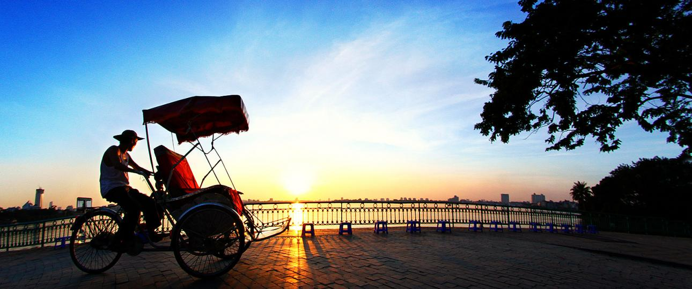

Northern Vietnam
The northern part of Vietnam has the most spectacular sights and interesting things to explore, and Hanoi makes a great base to explore this region’s many wonders.


Central Vietnam
Central Vietnam is known for its well-preserved historical sites, smiling locals, and soothing natural beauty. The central coast will beckon you with the promise of enriching experiences and sun-kissed days by the beach.



Southern Vietnam
From island escapes to the non-stop action, southern Vietnam offers both vibrant urban energy and mellow countryside.